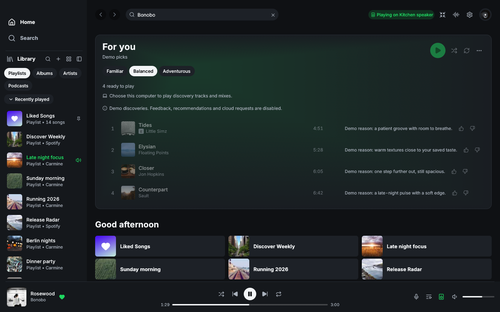

A compact For you queue replaces the large prompt and repeated per-song errors. Familiar, Balanced and Adventurous guide automatic picks from saved taste and explicit feedback. Taste editing is optional after setup. Unmatched suggestions stay collapsed, with a Spotify check that does not call AI. The frosted pane preserves the inherited sidebar, player and library.
Actual macOS native demo captures, 100% zoom. Before is the delivered preview
5ba0ea9; After is this redesign. The matched comparison uses the same
Home fixtures, four sample discoveries and remote Kitchen speaker at the selected
size. Animated playback progress differs by a few seconds. Discovery playback is
now disabled remotely because URI-list handoff has not been verified. Library
playlist Connect handoff remains available.
Additional candidate states use a local, paused demo receiver at 1440 × 900.
Synthetic picks are labeled; no service receives demo feedback. These images
show layout and controls, not live recommendation quality, catalogue accuracy,
Windows rendering or iPhone playback. The original fork-main captures remain
preserved as before-*.png for the broader first-slice comparison.

Remaining acceptance: custom AI-mix outbound handoff; Windows playback and native visual evidence; real-iPhone independent background playback; iOS architecture and TestFlight; three-platform application sync; real listening evaluation. iOS was deferred by Serge while remote; macOS is the active priority. Additional state captures use normal-size candidate windows only.